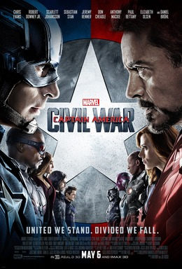
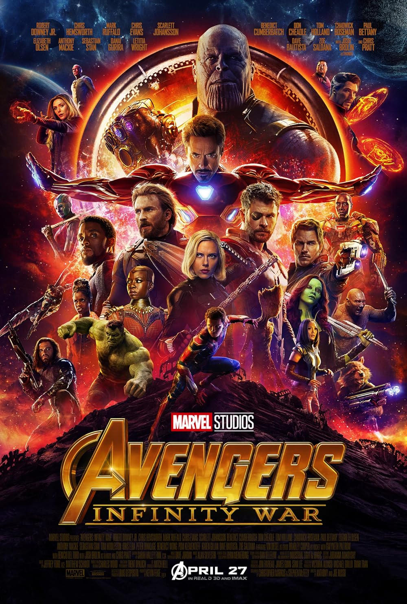
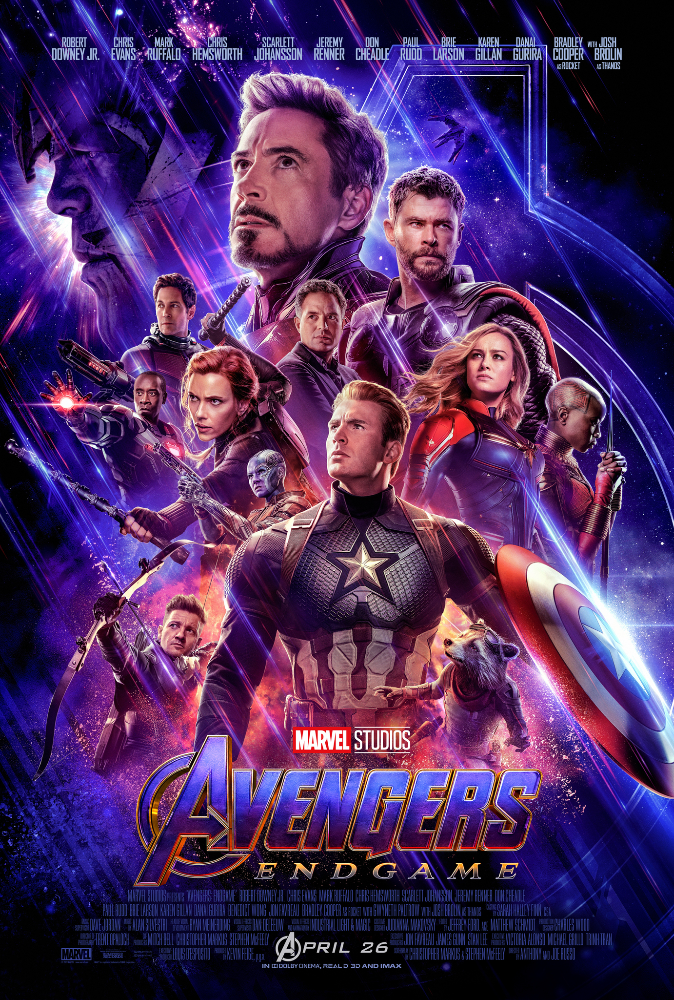

🔥 Популярные фильмы
С чего начинают многие зрители и какие проекты стали важными точками в истории MCU.
 2008 • PHASE 1
2008 • PHASE 1
Iron Man
Начало кинематографической вселенной Marvel.
 2012 • PHASE 1
2012 • PHASE 1
The Avengers
Первое объединение главных героев.

2016 • PHASE 3Civil War
Конфликт внутри команды Avengers.

2018 • PHASE 3Infinity War
Одна из главных точек Infinity Saga.

2019 • PHASE 3Endgame
Финальная глава Infinity Saga.